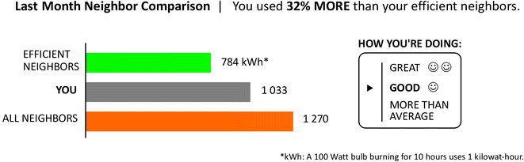

Fondamenti di Economia Comportamentale
#6
novembre 2024
Iniziamo con un esperimento
- Per accedere all’esperimento, puoi:
- Visitare https://classex.uni-passau.de
- Scansionare il codice QR qui sotto
Istruzioni
Verrai abbinato casualmente a un’altra persona. L’indentità dell’altro membro della coppia non ti sarà rivelata. L’esperimento prevede una sola decisione.
Ruoli: Proponente (
 ), Rispondente (
), Rispondente ( ).
).All’inizio dell’esperimento,
 riceverà una dotazione di 10 euro.
riceverà una dotazione di 10 euro. propone come dividere i 10 euro tra sé stesso e
propone come dividere i 10 euro tra sé stesso e  . Qualsiasi divisione è permessa, incluse la possibilità di tenere tutto il denaro e di donarlo interamente.
. Qualsiasi divisione è permessa, incluse la possibilità di tenere tutto il denaro e di donarlo interamente.
Istruzioni (cont)
 può decidere di accettare o rifiutare l’offerta.
può decidere di accettare o rifiutare l’offerta.Se
 accetta l’offerta, i giocatori dividono il denaro come suggerito da
accetta l’offerta, i giocatori dividono il denaro come suggerito da  .
.Al contrario, se
 rifiuta l’offerta, allora entrambi i giocatori non ricevono nulla.
rifiuta l’offerta, allora entrambi i giocatori non ricevono nulla.La comunicazione è proibita.
Iniziamo
Istituzione: LUISS Guido Carli
Corso: Behavioral Economics and Consumer Decision Making II
Tipo di account: partecipante
Password: marmellata25
Domande
Proponente (
 ): quale allocazione hai proposto? Quale ragionamento ti ha portatx a fare la tua scelta?
): quale allocazione hai proposto? Quale ragionamento ti ha portatx a fare la tua scelta?Rispondente (
 ): quale allocazione ti è stata proposta? L’hai accettata? Quale ragionamento ti ha portatx a fare la tua scelta?
): quale allocazione ti è stata proposta? L’hai accettata? Quale ragionamento ti ha portatx a fare la tua scelta?
Il gioco dell’ultimatum
L’esperimento a cui hai partecipato è noto come gioco dell’ultimatum (Güth, Schmittberger, e Schwarze 1982).
Si tratta di un gioco sequenziale (e non simultaneo): il payoff del Proponente dipende da cosa farà il Rispondente, quindi il Proponente deve ipotizzare quale potrebbe essere la reazione alla propria offerta.
Per leggere l’articolo, clicca QUI.
Il gioco dell’ultimatum (cont)
- Se il Rispondente fosse puramente egoista e si preoccupasse solo del proprio guadagno, allora accetterebbe qualsiasi offerta positiva perché qualcosa, anche se poco, è sempre meglio di niente.
Se il Proponente credesse che il Rispondente accetterebbe qualsiasi offerta, allora offrirebbe l’importo minimo possibile (ad esempio, un centesimo).
Questa previsione corrisponde ai dati sperimentali? No.
Il gioco dell’ultimatum (cont)
Un Rispondente che ritiene che l’offerta del Proponente sia ingiusta, o che l’offerta sia offensivamente bassa per qualche altra ragione, potrebbe essere disposto a sacrificare il proprio guadagno per punire il Proponente.
Perché il Proponente dovrebbe fare un’offerta alta?
- Altruismo, paura del rifiuto, equità.
L’equità è peculiare degli esseri umani?
Equità ed guaglianza vanno di pari passo?
Cappelen et al. (2014) hanno condotto un esperimento per indagare la relazione tra la percezione di equità e l’eguaglianza.
Risultati principali:
- Il cervello umano reagisce istintivamente all’inequità.
- Una distribuzione egualitaria del reddito potrebbe non essere percepita come equa se il reddito è stato generato da sforzi diseguali.
- Il cervello è un grande sostenitore dell’equità, ma non necessariamente dell’eguaglianza.
Per leggere l’articolo, clicca QUI.
Equità ed eguaglianza
Andiamo avanti
- Abbiamo visto che le persone apprezzano l’equità e provano piacere nel donare agli altri.
- E allora perché evitate queste persone?
Perché le persone non donano?
- Andreoni, Rao, e Trachtman (2017): le persone evitano la stimolazione empatica per regolare le proprie donazioni e il senso di colpa.
- Proprio come non dovremmo mangiare il nostro dessert preferito ogni volta che ne abbiamo l’opportunità, non possiamo nemmeno donare in ogni occasione, anche se vorremmo poter fare entrambe le cose.
- Così come chi mangia può evitare di esporsi al dessert, allo stesso modo un altruista può evitare di essere sollecitato a donare, ad esempio girando al largo dei fundraiser.
Per leggere l’articolo, clicca QUI.
Pressione sociale e donazioni
- Come sappiamo, le persone potrebbero decidere di donare se interessate a una causa che ritengono meritevole o perché apprezzano il warm glow che deriva dalle proprie azioni.
In alternativa potrebbero decidere di donare, pur non volendo farlo, perché sono state efficacemente messe sotto pressione sociale.
Se potessero, queste persone preferirebbero evitare l’interazione personale con il fundraiser ed evitare di donare.
DellaVigna, List, e Malmendier (2012) hanno testato questa idea sperimentalmente.
Per leggere l’articolo, clicca QUI
Pressione sociale: evidenza sperimentale
- Una raccolta fondi porta a porta a Chicago per due enti di beneficenza:
- Un ospedale pediatrico locale (La Rabida), noto come eccellente ospedale per bambini.
- Un ente di beneficenza fuori città (East Carolina Hazard Center, ECU) e poco conosciuto.
- Le organizzazioni sono state scelte in modo che la maggior parte delle famiglie preferisse una (La Rabida) rispetto all’altra (ECU).
- Ad alcune famiglie è stato comunicato l’orario esatto della raccolta tramite un volantino appeso alle maniglie delle porte.
Pressione sociale: evidenza sperimentale (cont)
- Trattamento 1: volantino per avvisare con un giorno di anticipo sull’orario di visita di un fundraiser.
Trattamento 2: volantino simile a quello del Trattamento 1, ma con l’aggiunta di un riquadro di opt out da spuntare per chi non desiderasse essere disturbato dal fundrasier.
Baeline: il fundrasier si presenta alla porta delle case, senza alcun volantino per avvisare in anticipo.
Pressione sociale: evidenza sperimentale (cont)

Pressione sociale: evidenza sperimentale (cont)
| Visita | Costo della pressione sociale | |
|---|---|---|
| Baseline | Inattesa | Alto |
| Trattamento 1 (volantino) | Attesa | Alto |
| Trattamento 2 (volantino + opt out) | Attesa | Basso |
- Domanda: perché il costo della pressione sociale è alto nel Baseline e nel Trattamento 1? Perché è basso nel Trattamento 2?
Pressione sociale: evidenza sperimentale (cont)
Pressione sociale: evidenza sperimentale (cont)
La presenza di un volantino che annuncia la visita ha ridotto la percentuale di famiglie che hanno aperto la porta di circa 4 punti percentuali rispetto al Baseline senza volantino.
La percentuale di famiglie che hanno aperto la porta è diminuita ulteriormente, di altri 5-6 punti percentuali, nel momento in cui è stata prevista la possibilità di opt out.
Questa è una prova della pressione sociale: quando vengono informate della visita di un fundraiser, le persone cercano di evitare l’interazione, specialmente quando fare ciò ha un costo basso, come nel trattamento con opt out.
Pressione sociale: evidenza sperimentale (cont)
Pressione sociale: evidenza sperimentale (cont)
Il volantino di per sé non influisce sulle donazioni.
Possibile spiegazione:
- L’avviso tramite stimola la presenza a casa dei donatori altruisti e riduce la presenza di coloro che donano solamente a causa della pressione sociale.
- Se queste due forze hanno un effetto di dimensioni simili, allora l’impatto complessivo è pari a zero.
Pressione sociale: evidenza sperimentale (cont)
La possibilità di opt out riduce significativamente le donazioni.
Possibile spiegazione:
- Nel trattamento con opt out, il costo psicologico di evitare il fundraiser è considerevolmente ridotto, e le donazioni diminuiscono proporzionalmente.
- Osservazione: se le donazioni fossero esclusivamente dovute ad altruismo, allora l’opt out non influirebbe sui tassi di donazione. La pressione sociale conta, e spinge a donare persone che altrimenti non lo farebbero!
Confronti sociali
Spesso le persone confrontano il proprio comportamento e le proprie opinioni con quelli altrui.
Molte decisioni sono influenzate da questi confronti.
Vedremo come, sfruttando i confronti sociali, le politiche di informazione possono raggiungere il risultato desiderato.
Confronti sociali: evidenza sperimentale
Allcott (2011) ha esaminato uno dei più famosi programmi statunitensi di risparmio energetico, gestito da un’azienda chiamata OPOWER.
OPOWER invia lettere contenenti rapporti sul consumo energetico domestico, che confrontano l’uso di energia di una famiglia con quello di vicini simili.
Il gruppo di riferimento e confronto di ciascuna famiglia è composto da circa 100 abitazioni geograficamente vicine con caratteristiche analoghe, tra cui una superficie simile e lo stesso tipo di riscaldamento (gas o elettrico).
Per leggere l’articolo, clicca QUI.
Confronti sociali: evidenza sperimentale (cont)
- Le famiglie vengono classificate come:
- “Great ☺️☺️” se consumano meno energia del 20esimo percentile del proprio gruppo di confronto.
- “More than average” se consumano più della media.
- “Good ☺️” se si trovano in una posizione intermedia.

Confronti sociali: evidenza sperimentale (cont)
Confronti sociali: evidenza sperimentale (cont)
L’effetto del trattamento sui consumi impiega alcuni mesi per raggiungere uno stato stazionario.
L’effetto del trattamento è più forte nei mesi invernali ed estivi, quando il riscaldamento e il condizionamento aumentano la domanda di energia.
Dopo quasi due anni di trattamento continuo, non ci sono evidenze di una riduzione dell’effetto del trattamento.
Nessuna evidenza di effetti boomerang: le famiglie con bassi consumi energetici non hanno aumentato il proprio consumo dopo che i report hanno rivelato che utilizzano meno energia delle altre famiglie.
Riconoscimento sociale
In che misura il riconoscimento sociale influenza il nostro comportamento?
Goette e Tripodi (2024) hanno cercato di rispondere a questa domanda conducendo un esperimento sul campo e un esperimento basato su sondaggio, realizzati in collaborazione con Avis Toscana.
Ai donatori è stato chiesto di donare sangue o plasma nel mese successivo a comunicazioni sperimentali inviate via Email/WhatsApp degli autori.
Variabile di interesse: numero di donazioni effettuate nel corso di questo mese.
Per leggere l’articolo, clicca QUI.
Riconoscimento sociale (cont)
Riconoscimento sociale: evidenza sperimentale
- Approcci per fornire riconoscimento sociale:
- Informare i donatori, all’inizio dello studio, sulla frequenza delle donazioni di altre persone nel passato recente (Peer).
- Informare i donatori, all’inizio dello studio, sulla frequenza delle donazioni di altre persone nel passato recente e, al termine dello studio, su chi ha donato nel corso del mese (Peer + Visibility).
- Campagna social che menziona chi ha donato nel corso del mese postandone il nome sulle pagine Facebook di Avis Toscana (Facebook).
Riconoscimento sociale: evidenza (cont)
- Gruppi di controllo:
- Nessuna sollecitazione a donare (No ask)
- Richiesta di donare con una semplice domanda (Simple ask).
- Canali di comunicazione:
- Email di Avis (tasso di lettura: 17%)
- Account WhatsApp di Avis (tasso di lettura: >90%)
Riconoscimento sociale: evidenza (cont)
Riconoscimento sociale: evidenza (cont)

Riconoscimento sociale: evidenza (cont)
Riconoscimento sociale: evidenza (cont)
Riconoscimento sociale: evidenza (cont)
Riconoscimento sociale: evidenza (cont)
Nel gruppo di controllo No ask, la percentuale di partecipanti che ha donato sangue nel corso del mese è del 10%.
Offrire ai donatori il riconoscimento della propria donazione via social (trattamento Facebook) ha incrementato le donazioni del 10,6% rispetto a No ask.
Riconoscimento sociale: evidenza (cont)
Rispetto a No ask, le donazioni aumentano anche quando ai donatori vengono proposti confronti con gli altri (Peer e Peer + Visibility).
Tra Peer e Peer + Visibility non ci sono però differenze: rendere visibili le donazioni future tra i membri del gruppo fa poca differenza.
Nessuna di queste “ricompense sociali” è più efficace di una semplice richiesta (trattamento Simple ask), che aumenta le donazioni del 26,6% rispetto a No ask.
Riconoscimento sociale: evidenza (cont)
Riconoscimento sociale: evidenza (cont)
La differenza tra le condizioni No ask e Facebook non è statisticamente significativa.
Offrire riconoscimento sociale su Facebook non sembra quindi aumentare significativamente le donazioni rispetto alla condizione di controllo.
Domanda: perché?
Riconoscimento sociale: evidenza (cont)
- Possibile spiegazione #1: ai donatori potrebbe non piacere il modo in cui il riconoscimento sociale è stato implementato tramite i canali Facebook.
- Per verificarlo, al termine del periodo di donazione è stato condotto un sondaggio di opinione su un campione casuale di soggetti.
- L’apprezzamento nei confronti dei trattamenti Simple ask e Facebook non differisce in modo significativo.
- L’evidenza sperimentale sembra pertanto non supportare questa ipotesi.
Riconoscimento sociale: evidenza (cont)
Possibile spiegazione #2: le persone potrebbero tendere a evitare attività che rischierebbero di farle apparire troppo preoccupate per la propria immagine.
Questa ipotesi è coerente con i risultati dell’esperimento tramite sondaggio condotto da Goette e Tripodi.
I donatori abituali sono meno preoccupati di segnalare altruismo rispetto al timore di essere percepiti come in cerca di visibilità.
Riconoscimento sociale: evidenza (cont)
- In sintesi:
- Il riconoscimento sociale non motiva i donatori di sangue più di una semplice richiesta di donare.
- Incrementare la visibilità delle buone azioni può avere effetti controproducenti quando si teme che la propria prosocialità venga percepita dalle altre persone come ricerca di visibilità.
Concetti chiave
- Prima di procedere, prenditi un momento per assicurarti di aver compreso questi concetti:
- Gioco dell’ultimatum
- Equità
- Pressione sociale
- Confronti sociali
- Riconoscimento sociale